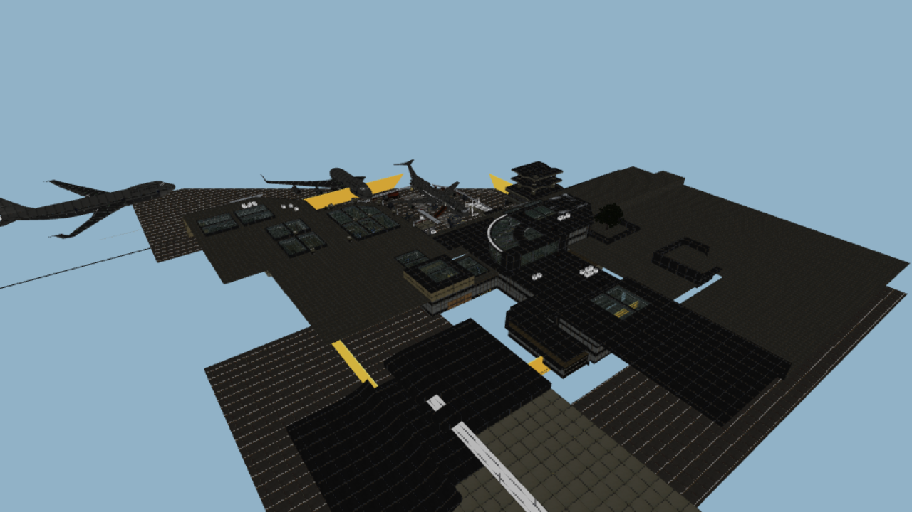
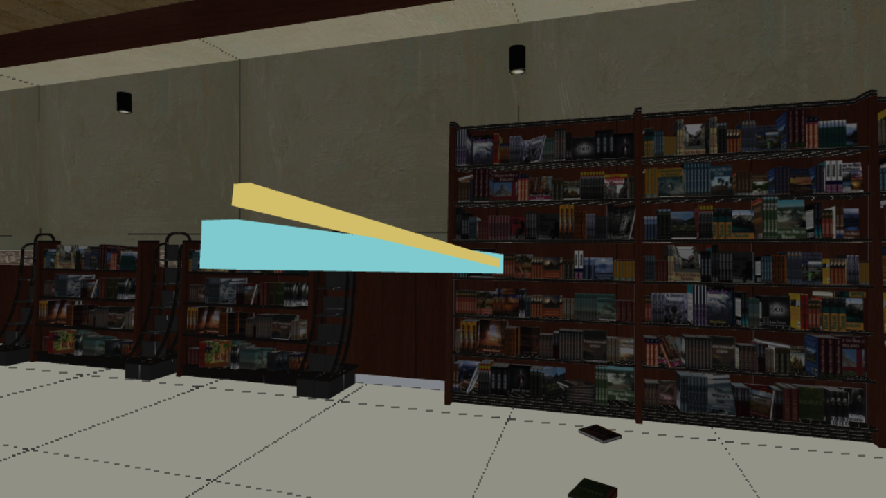
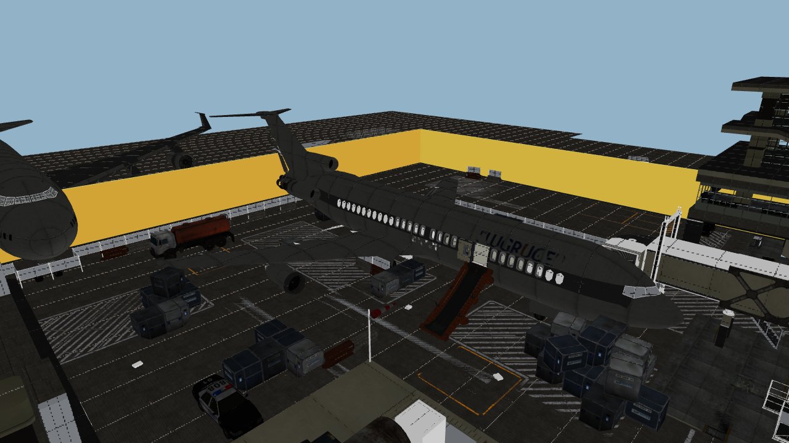
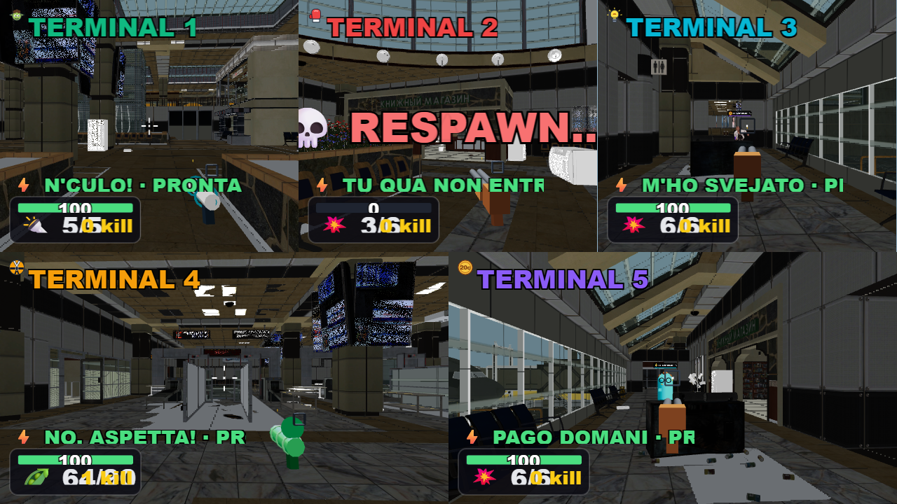

PARTY GAME · SPARATORIA
Seleziona Sparatoria e vota Terminal. Interni, scale, piazzale e aereo nella modalità esistente per 2–5 giocatori. Ricostruzione parziale: alcuni arredi e materiali originali mancano.



